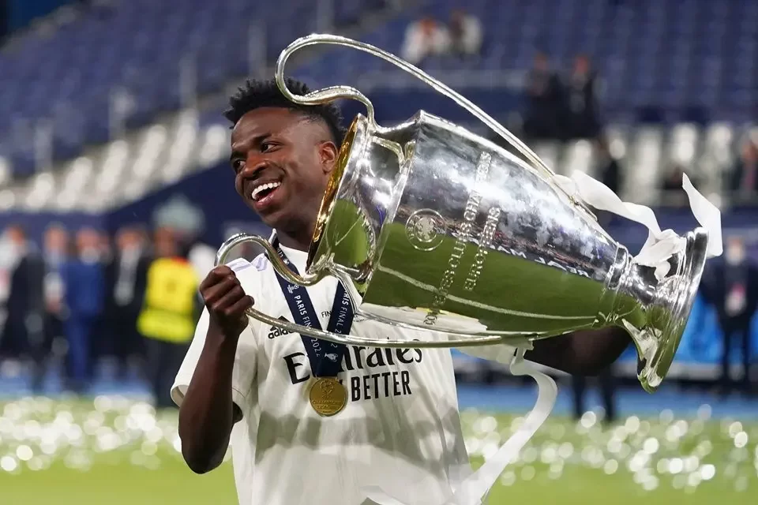
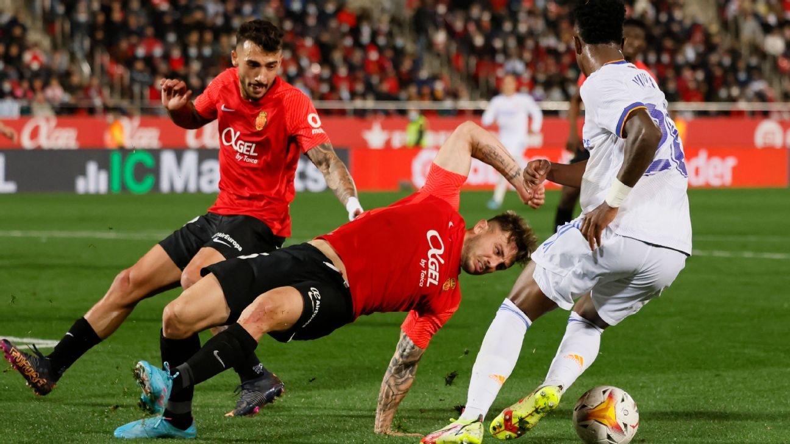
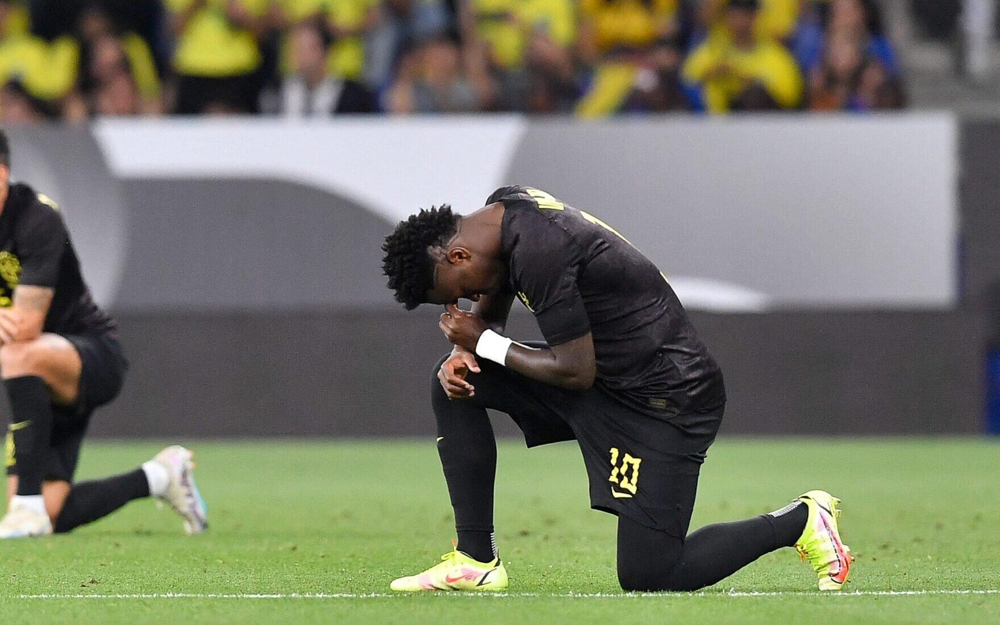

O futebol brasileiro é conhecido por revelar talentos excepcionais ao longo de sua história, e Vinicius Jr. é um desses exemplos recentes que têm conquistado a atenção dos amantes do esporte em todo o mundo. Nascido em 12 de julho de 2000, Vinicius Jose Paixão de Oliveira Junior, mais conhecido como Vinicius Jr., é um jogador de futebol brasileiro que tem se destacado por sua habilidade técnica, velocidade e talento em campo. Desde muito jovem, Vinicius Jr. mostrou um interesse e talento notáveis pelo futebol. Ele começou sua carreira nas categorias de base do Flamengo, um dos clubes mais tradicionais do Brasil. Seu desempenho impressionante nas divisões inferiores chamou a atenção de olheiros e especialistas, que rapidamente perceberam que ele tinha um potencial extraordinário. Em 2017, com apenas 16 anos, Vinicius Jr. fez sua estreia no time profissional do Flamengo. Sua velocidade e habilidade em driblar rapidamente se tornaram características marcantes de seu jogo, encantando os torcedores e levando-os a acreditar que estavam diante de uma futura estrela do futebol mundial.
No ano seguinte, em 2018, Vinicius Jr. foi transferido para o Real Madrid, um dos maiores clubes da Europa, em uma negociação que alcançou valores impressionantes. Essa transferência precoce para um clube de elite aumentou ainda mais a expectativa em torno do jovem jogador brasileiro. No entanto, ele enfrentou desafios em sua adaptação ao futebol europeu e ao novo ambiente, que eram naturalmente mais exigentes e competitivos. Apesar dessas dificuldades, Vinicius Jr. não desistiu. Ele trabalhou duro e buscou melhorar seu desempenho a cada partida. Com o passar do tempo, o jovem brasileiro foi conquistando espaço e confiança no Real Madrid. Sua técnica refinada, capacidade de acelerar o jogo e habilidade para finalizar resultaram em momentos brilhantes dentro de campo.
Além de suas atuações no clube, Vinicius Jr. também teve a oportunidade de representar a seleção brasileira. Ele fez parte do elenco que conquistou o título da Copa América em 2019, demonstrando seu talento e contribuindo para a vitória da equipe. No entanto, é importante ressaltar que Vinicius Jr. ainda está em uma fase de desenvolvimento e aprimoramento de suas habilidades. Aos 22 anos de idade, ele tem um futuro promissor pela frente e a expectativa de que se torne um dos grandes nomes do futebol mundial.
Vinicius Jr. é um exemplo de determinação e perseverança. Sua trajetória inspira jovens atletas a nunca desistirem de seus sonhos, mesmo diante de desafios e adversidades. Com seu estilo de jogo empolgante e talento inegável, ele continua a encantar fãs e especialistas, conquistando seu espaço no cenário do futebol internacional. No entanto, é importante lembrar que o sucesso de Vinicius Jr. não se limita apenas ao campo de futebol. Ele também tem se envolvido em projetos sociais, usando sua influência para ajudar comunidades carentes e causas nobres. Essa atitude solidária mostra que Vinicius Jr. não é apenas um jogador talentoso, mas também um ser humano comprometido com o bem-estar de sua sociedade. Em suma, Vinicius Jr. representa o futuro do futebol brasileiro e mundial. Com sua juventude, talento e determinação, ele está trilhando seu caminho para se tornar uma das grandes estrelas do esporte. Ainda há muito a ser escrito sobre a carreira de Vinicius Jr., mas uma coisa é certa: ele já deixou sua marca e continua a inspirar uma nova geração de jogadores e fãs do futebol.
